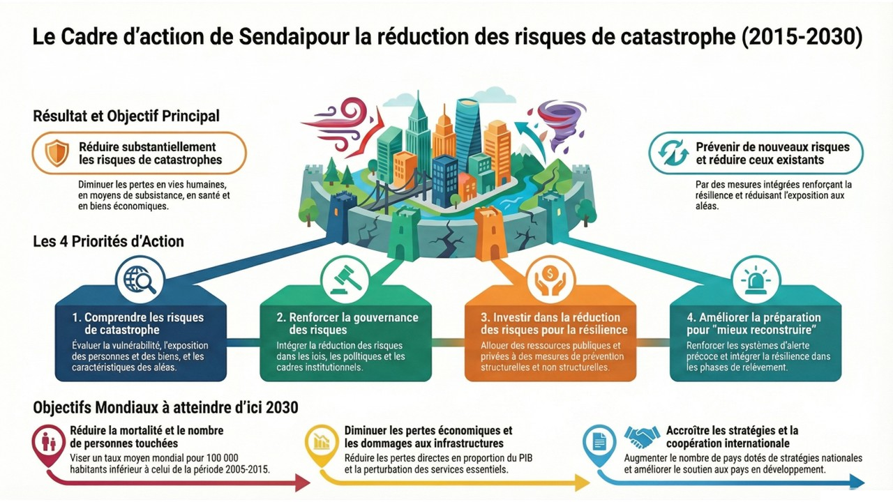

24 Le cadre de Sendai (2015-2030) : quatre priorités pour réduire les risques de catastrophe

Le cadre d’action de Sendai pour la réduction des risques de catastrophe 2015-2030 est un accord mondial adopté en mars 2015 à Sendai, au Japon, lors de la troisième Conférence mondiale des Nations unies sur le sujet. Il succède au cadre d’action de Hyogo (2005-2015) et acte un changement de paradigme : on passe de la gestion des catastrophes après coup à la prévention et à la réduction des risques avant qu’ils ne se matérialisent. Ce déplacement répond aux lacunes du passé. Entre 2005 et 2015, les catastrophes ont causé plus de 700 000 morts, 1,4 million de blessés et plus de 1 300 milliards de dollars de pertes, entravant le développement. Quatre priorités d’action en forment le cœur.
24.1 Priorité 1 : comprendre les risques de catastrophe
24.1.1 L’Objectif
La première étape pour réduire un risque est de le comprendre. Cette priorité établit que toute action efficace doit être fondée sur une connaissance approfondie de la nature des menaces.
Les politiques et les pratiques de gestion des risques de catastrophe devraient être fondées sur la compréhension des risques de catastrophe dans toutes leurs dimensions : la vulnérabilité, les capacités et l’exposition des personnes et des biens, les caractéristiques des aléas et l’environnement.
24.1.2 Exemples d’actions concrètes (niveaux national et local)
Pour atteindre cet objectif, les États et les autorités locales sont encouragés à mettre en œuvre des actions précises :
Collecte et analyse de données Évaluer et enregistrer systématiquement les pertes causées par les catastrophes passées (économiques, sociales, sanitaires, etc.) est essentiel. Ces données permettent de mieux comprendre les impacts réels et d’anticiper les conséquences des futurs événements.
Cartographie des zones à risques Développer et diffuser publiquement des cartes des zones à risques permet d’informer les décideurs, les urbanistes et le grand public sur les dangers spécifiques à un territoire (inondations, séismes, glissements de terrain). Ces outils sont cruciaux pour orienter l’aménagement du territoire.
Intégration dans l’éducation Incorporer la connaissance des risques de catastrophe dans les programmes scolaires, l’éducation civique et la formation professionnelle. Former les citoyens dès leur plus jeune âge contribue à construire une culture durable de la prévention et de la résilience.
Dialogue entre science et politique Renforcer la coopération entre les scientifiques, les experts techniques et les responsables politiques. Ce dialogue garantit que les décisions en matière de gestion des risques sont basées sur des données factuelles, des évaluations rigoureuses et les meilleures connaissances disponibles.
Cette compréhension approfondie des risques n’a de valeur que si elle est soutenue par une structure de gouvernance capable de la traduire en action, ce qui constitue la deuxième priorité.
24.2 Priorité 2 : renforcer la gouvernance des risques de catastrophe pour mieux les gérer
24.2.1 L’Objectif
La gouvernance est le pilier qui soutient l’ensemble de la gestion des risques. Sans une direction claire, une coordination efficace et des responsabilités bien définies, même la meilleure compréhension des risques reste lettre morte.
La gouvernance des risques de catastrophe, aux niveaux national, régional et mondial, revêt la plus grande importance pour l’efficacité et l’efficience de la gestion desdits risques. Elle suppose d’avoir une vision claire des choses, des plans, des compétences et des orientations, de coordonner l’action de tous les secteurs et d’un secteur à l’autre, et de faire participer toutes les parties prenantes.
24.2.2 Exemples d’actions concrètes (niveaux national et local)
Voici des exemples d’actions visant à renforcer cette gouvernance :
Adopter des stratégies nationales et locales Il est fondamental d’élaborer et de mettre en œuvre des plans de réduction des risques de catastrophe clairs, assortis de cibles, d’indicateurs et d’échéances. Ces stratégies permettent d’aligner les efforts, de suivre les progrès et de garantir que les objectifs sont atteints.
Définir les rôles et responsabilités Établir des cadres législatifs et réglementaires qui précisent clairement les responsabilités de chaque acteur (ministères, agences, autorités locales, secteur privé). Habiliter les autorités locales, en leur donnant les moyens réglementaires et financiers d’agir, est particulièrement crucial car la gestion des risques est souvent plus efficace au plus près du terrain.
Créer des plateformes de coordination Mettre en place des pôles de coordination, comme des plateformes nationales pour la réduction des risques de catastrophe. Ces structures permettent de s’assurer que les différents ministères (environnement, urbanisme, santé, finances) et les autres acteurs (société civile, secteur privé) travaillent de manière cohérente et non en silos.
Une gouvernance efficace et des structures de coordination établies créent le cadre nécessaire, mais leur mise en œuvre dépend de la mobilisation de ressources financières. C’est l’objet de la troisième priorité.
24.3 Priorité 3 : Investir dans la réduction des risques de catastrophe pour renforcer la résilience
24.3.1 L’Objectif
Cette priorité souligne qu’il est plus intelligent et plus rentable d’investir dans la prévention que de payer le coût, souvent exorbitant, de la réponse et de la reconstruction après une catastrophe.
L’investissement public et privé dans la prévention et la réduction des risques de catastrophe au moyen de mesures structurelles et non structurelles revêt une importance essentielle pour ce qui est de renforcer la résilience économique, sociale, sanitaire et culturelle des personnes, des collectivités, des pays et de leurs biens, et de préserver l’environnement.
24.3.2 Exemples d’Actions concrètes (niveaux national et local)
Les investissements peuvent être de nature physique (structurels) ou liés aux politiques et aux systèmes (non structurels).
| Type d’Investissement | Exemple d’Action Concrète |
| Structurel (Physique) | Moderniser les infrastructures essentielles (hôpitaux, écoles) pour qu’elles résistent aux aléas. |
| Structurel (Physique) | Appliquer des règlements de construction plus stricts pour promouvoir des structures résistant aux catastrophes. |
| Non-structurel (Politiques) | Intégrer les évaluations des risques dans les politiques d’aménagement du territoire et d’urbanisme. |
| Non-structurel (Social) | Mettre en place des mécanismes de protection sociale et de renforcement des moyens de subsistance pour aider les populations les plus pauvres à faire face aux chocs. |
L’investissement dans la résilience réduit considérablement les risques, mais ne les élimine pas. La préparation à l’inévitable, l’intervention efficace et la capacité à se relever plus fort sont donc les composantes finales et cruciales du Cadre.
24.4 Priorité 4 : Améliorer la préparation pour une intervention efficace et pour « Reconstruire en mieux »
24.4.1 L’Objectif
Cette dernière priorité se concentre sur les actions à mener avant qu’une catastrophe ne frappe pour garantir une réponse efficace, et sur la manière de transformer la phase de reconstruction en une occasion de réduire les vulnérabilités futures.
L’expérience des catastrophes passées a montré que la phase de relèvement, de remise en état et de reconstruction doit être préparée en amont et qu’elle est une occasion cruciale de « mieux reconstruire », notamment en intégrant la réduction des risques de catastrophe dans les mesures de développement, de sorte que les nations et les collectivités deviennent résilientes face aux catastrophes.
24.4.2 Exemples d’actions concrètes (niveaux national et local)
La mise en œuvre de cette priorité repose sur trois piliers essentiels :
Renforcer les systèmes d’alerte rapide Investir dans des systèmes d’alerte qui couvrent plusieurs types de risques (multirisques) et qui sont centrés sur la population, en s’assurant que les alertes sont comprises et accessibles à tous, y compris aux plus vulnérables.
Organiser des exercices de préparation Mener régulièrement des simulations et des exercices (exercices d’évacuation, formations pour les premiers intervenants) afin de tester et d’améliorer les plans d’urgence. Ces entraînements garantissent une intervention rapide, coordonnée et efficace le moment venu.
Intégrer la réduction des risques dans la reconstruction Utiliser la phase de relèvement post-catastrophe pour ne pas simplement reconstruire à l’identique, mais pour améliorer les normes de construction, revoir l’aménagement du territoire et relocaliser les infrastructures critiques si nécessaire, afin de ne pas recréer les mêmes vulnérabilités.
24.5 Conclusion
Les quatre priorités du Cadre de Sendai forment un cycle vertueux et interdépendant : une meilleure compréhension des risques permet de renforcer la gouvernance ; une gouvernance efficace oriente les investissements vers la résilience ; et des investissements judicieux, combinés à une meilleure préparation, garantissent une réponse efficace et une reconstruction plus intelligente lorsque l’imprévu survient.
En fin de compte, la mise en œuvre de ce cadre ambitieux n’est pas seulement l’affaire des gouvernements. Comme le souligne le Cadre au paragraphe 35, « Si la responsabilité générale de réduire les risques de catastrophe incombe aux États, elle n’en est pas moins partagée entre les gouvernements et les parties prenantes concernées. »